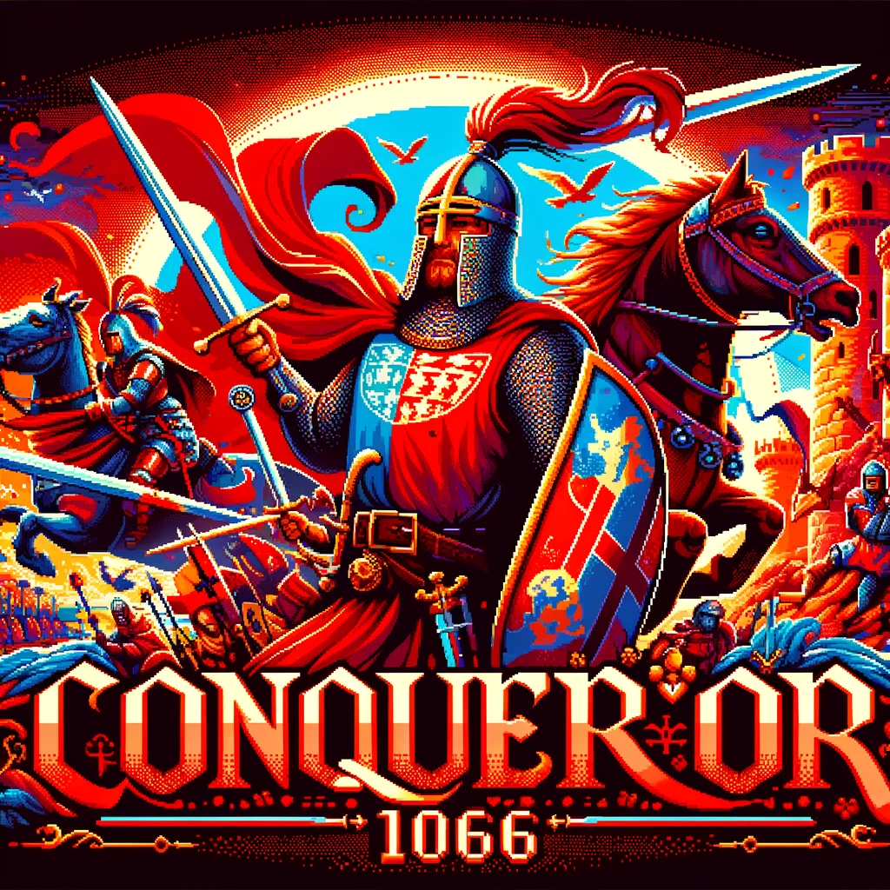

Conqueror 1066: FAQ

Conqueror 1066: Frequently Asked Questions (FAQ)
1. How do I start playing Conqueror 1066?
A: To start playing, select "New Game" from the main menu. You'll be introduced to the game's backstory and your character through a cinematic intro. After the introduction, you'll land on the beaches of Pevensey to begin your conquest.
2. What are the system requirements for Conqueror 1066?
A: The minimum system requirements are:
- Operating System: Windows 10
- Processor: Intel Core i5 or equivalent
- Memory: 8 GB RAM
- Graphics: NVIDIA GTX 660 or equivalent
- Storage: 40 GB available space
It's recommended to have a more powerful system for the best gaming experience.
3. Can I play Conqueror 1066 on a console?
A: Yes, Conqueror 1066 is available on PlayStation, Xbox, and Nintendo Switch. Please check the specific version for your console to ensure compatibility.
4. How do I save my game progress?
A: The game autosaves at certain checkpoints. However, you can manually save your game progress at any time through the pause menu by selecting "Save Game."
5. Is there a multiplayer mode in Conqueror 1066?
A: Currently, Conqueror 1066 is a single-player game focused on delivering a rich story-driven experience. There are no plans for a multiplayer mode at this time.
6. How can I improve my combat skills?
A: Combat skills can be improved by practicing in the Training Grounds, accessible from your main camp. Experiment with different weapons and techniques to find what best suits your playstyle. Paying attention to enemy patterns and mastering the timing of blocks and dodges is key.
7. Are there different endings to the game?
A: Yes, Conqueror 1066 features multiple endings based on the decisions you make throughout the game. Your choices in key missions and interactions with characters will influence the fate of England and the conclusion of your story.
8. What happens if my character dies in battle?
A: If your character dies, you will respawn at the last checkpoint. Make sure to use your experience to approach the situation differently, whether by adjusting your strategy or improving your gear.
9. Can I switch weapons during the game?
A: Yes, you can switch weapons by accessing your inventory (press "I"). You can carry multiple weapons and switch among them based on your tactical needs and preferences.
10. How do I report a bug or provide feedback?
A: We welcome feedback and reports on any issues you encounter. Please visit our official website and use the "Support" section to report bugs or share your thoughts. Your feedback is invaluable in helping us improve the game.
11. Is there downloadable content (DLC) available for Conqueror 1066?
A: Yes, we plan to release DLC packs that expand the story, introduce new missions, and add additional content to the game. Stay tuned to our official channels for updates on DLC releases.
For any further questions, please refer to the official Conqueror 1066 website or contact our support team. Thank you for playing!